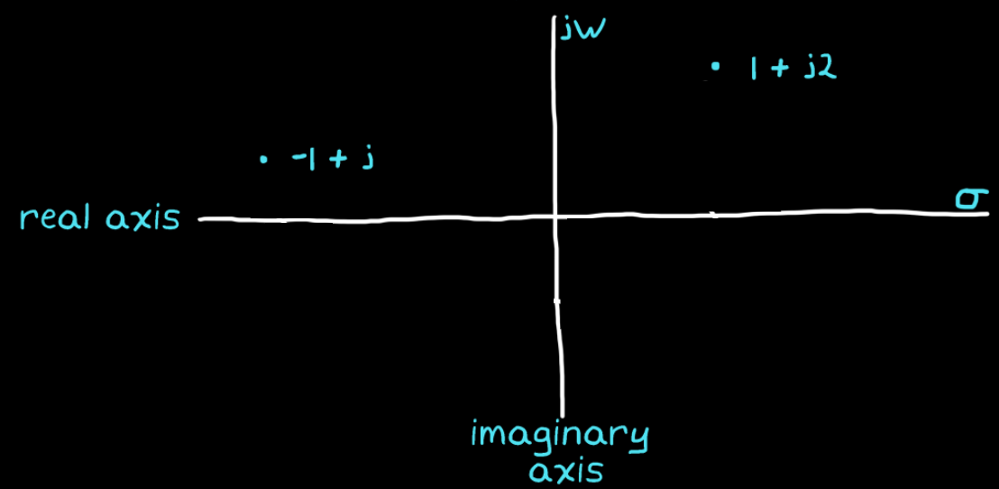

Instead of just cosine waves, the Laplace transform decomposes a time domain signal into both cosines and exponential functions.
Description
$s$ is a complex number, which means that it contains values for two dimensions:
One dimension describes the frequency of a cosine wave
The second dimension describes the exponential term
It is defined as (more details here):
$$
s = \sigma + j\omega
$$
s plane

It would be cumbersome to have two separate number lines to describe $s$; one for frequency and one for the exponential rate. Instead, they are combined into a two-dimensional plane where the real axis is the exponential line and the imaginary axis is the frequency line. The value of $s$ provides a location in this plane and describes the resulting signal, $e^{st}$, as a function of the selected $\omega$ and $\sigma$.